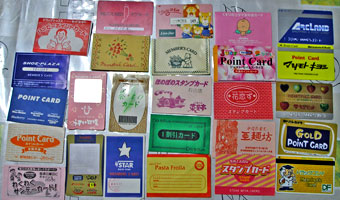

スーパーや飲食店のポイントカード

ある主婦の財布の中のポイントカード（一部）
日本のスーパーや飲食店では、利用に応じてポイントが貯まるカードを発行しているところが多いです。買い物や飲食での支払い金額などに応じてポイントが増え、一定のポイントが貯まると商品券や食事券、割引券などと交換することができます。ポイントカードには、「とくとくカード」や「わくわくカード」のような名前のものもあります。なお、ほとんどのポイントカードは無料で作ることができます。
買い物や飲食で支払いをするときにポイントカードを提示すると、ポイントを加算したり、ポイントスタンプを押したりしてもらえます。そのため、レジで支払いをするときには、ポイントカードの有無を尋ねられることが多いです。また、ポイントカードを持っていないと答えると、新しくポイントカードを作るか質問されるのがふつうです。よく利用する店ならば、ポイントカードを作ってもらうのがよいでしょう。そうでなければ、断りましょう。
- ポイントカードはお持ちですか？
- ないです。
- おつくりいたしましょうか？
- あ、お願いします。／いや、いいです。
- 「育達ハッピーカード」はお持ちでしょうか？
- いえ。
- 無料でお作りできますが、どうなさいますか？
- じゃあ、作ってください。／この店あまり来ないんで。
- ポイントカードはよろしいですか？
- はい。
- 無料でお作りすることできますが？
- じゃあ、お願いします。／別にいいです。